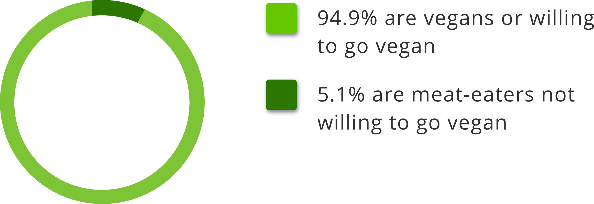
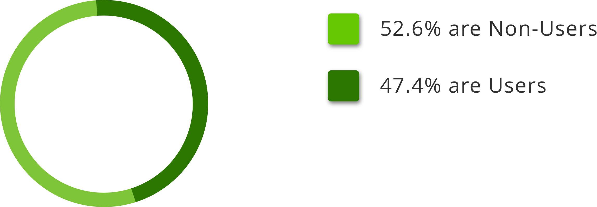
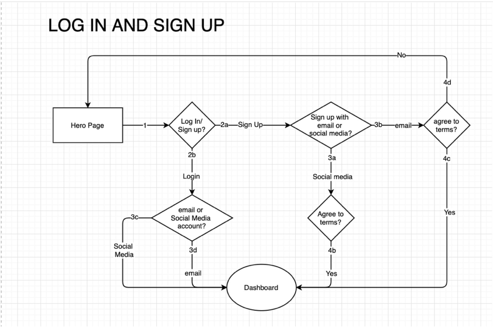
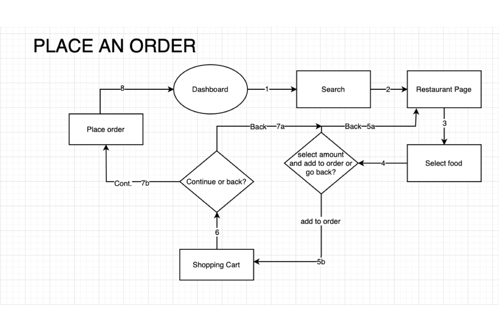

Food delivery app specifically tailored for vegans
Overview
- Roles
- UX Design
- Visual Design
- Brand & Identity
- Deliverables
- User Surveys
- Competitive Analysis
- User Personas
- User Stories
- User Flows
- Paper Prototype
- Wireframes
- User Testing
- Style Guide
- Hi-fi Mockups
- Prototype
- Tools
- Sketch
- Invision
- Affinity Designer
- Affinity Photo
- Usability Hub
- Draw.io
- Duration
- 2 weeks
Summary
Today there are many food delivery apps out there with the exact functionality or features, but none offers a truly vegan-friendly experience and with the growing popularity of the vegan diet, there is a load of potential in this market.
Problem
Many people are changing to a vegan diet, but many of these consumers feel that none of the food delivery apps out there are vegan-friendly.
Solution
Creating a vegan-only food delivery app, that delivers food from restaurants that provide vegan certified foods and extensive filtering features, that allows users to filter items in accordance to their dietary lifestyle will put all vegans and users planning on changing their diet minds at ease.
Discovery
User Surveys
The survey I conducted had almost 100 people, most of them were vegans and people thinking about changing their diet, however, there were a few users who are meat eaters and don’t plan on changing their diet.
Vegans/Vegan Enthusiasts v Meat-eaters
Reasons for going vegan/vegetarian:
- • Environment
- • Animal Ethics
- • Health
- • Dislike the taste of meat
- • Curiosity
Food Delivery App Users v Non-Users
Reasons for not using Food Apps:
- • Expensive
- • Creating account is a hassle
- • Don't need it
- • Unsafe
- • Not available in the area
Changes needed to be considered:
- • Make it cheaper
- • More healthier vegan options
- • More promo codes
- • Environmentally friendly packaging
- • Make it more available
Features the users like about the apps:
- • Easy to use
- • Convenient
- • Fast
- • Live tracking
- • Attractive layout
User Personas
Because of the successful User Survey, I was able to create at least three User Personas, the first and second persona being someone who is a vegan but non-user and the other someone who is also a vegan but a user. While the third persona being someone willing to give veganism a chance.
Ash Ketchum
“There’s really no vegan friendly app out there”
Age: 18 / Location: New York City, NY
Work: Student / Relationship: Single
Goals
- Ash wants an app that’s vegan friendly, so he doesn’t eat meat by accident
- He wants more options of restaurant to choose from
- He doesn’t want to spend too much money on delivery
Frustration
- Ash doesn’t like that there aren’t many vegan options around
- Being a student, he can’t always have take out food
- He doesn’t own a car, so it’s hard for him to buy food from a restaurant
Misty Waters
“I would love an app that’s exclusive to vegans”
Age: 24 / Location: Los Angeles, CA
Work: Student / Relationship: Single
Goals
- Misty wants to order food for the cheapest price
- She wants to filter the type of food she can eat
- She doesn’t want to pay just as much on delivery as she is on the food.
Frustration
- She often feels that she is pay way too much on delivery and service fees
- She often worries that the restaurant might mess up her order
- She doesn’t like that sometimes the food arrive cold
Jesse Rocket
“Having food delivered helps me out with the kids at home”
Age: 35 / Location: Alexandria, VA
Work: Homemaker / Relationship: Married
Goals
- She wants to order delivery food, instead of dining out, because of her toddler
- Jesse also wants to improve her overall diet
- She wants to know the location of her food
Frustration
- She doesn’t like that sometimes the food can be a bit pricey
- She doesn’t like that a lot of the food on the list doesn’t have a photo
- She also doesn’t like that the food doesn’t have enough description
Competitive Analysis
The three competitors I’ve chosen were Doordash, Grubhub, and Postmates. Although visually speaking they look very different, the architecture of their apps look and act very much alike, but nonetheless, I decided to stack them up together to find their subtle differences.
Strengths
- • Doordash is widely available in the U.S and Canada
- • Doordash recently became the largest food delivery app in the world
- • Easy to use
Weaknesses
- • Users need to pay for both Service and Delivery fees
- • Doordash requires more steps than Grubhub to create an account
- • Customer service is not as good as Grubhub’s
Opportunities
- • Add more filtering options for users to fit their diet and lifestyle
- • Doordash could offer more promo codes to attract more users
- • Doordash could improve its customer service since there are many complaints
Threats
- • A new way of delivering food becomes available to the public
- • The younger generation could lean towards making their own food instead of buying take-outs
- • The Big Four Tech Companies could make it’s way to food delivery apps, which amazon is slowly making an appearance.
Strengths
- • Grubhub’s app is extremely easy to use.
- • It’s widely available in the US, just behind Doordash
- • With Dropbox’s premium option you can set a password, expiration date, and download limit to your links
Weaknesses
- • Sometimes there are minimum requirements to orders
- • It currently lost its number one spot to Doordash of being the largest food delivery app company
Opportunities
- • Customer service could be improved
- • Make it available in more countries
- • They could partner with more restaurants to give users a better overall experience
Threats
- • More competitors could enter the food delivery app market
- • It could be hacked by hackers and steal users information
- • Users could adopt a vegan diet, making them eat less take out and cooking more, hurting not only food delivery app companies, but also many restaurants
Strengths
- • Postmates' app is fairly easy to use
- • It has many restaurant options to choose from
- • With Postmates Unlimited, orders over $20 doesn’t have delivery fee
Weaknesses
- • Postmates is not available in other countries
- • Many complaints on their customer service
- • Postmates Unlimited is a bit price($9.99) especially for people who don’t order as frequently
Opportunities
- • Add more features to bring in new users
- • They could improve the overall user experience of the app
- • Reiterate that Postmates is vegan-friendly, by partnering with companies to make sure the food the user is ordering is vegan
Threats
- • Competitors could monopolize the market
- • Recession could hit, making users spend less
- • The company could be hit with a few lawsuits by the users if the food they order contains ingredients that they are allergic to or doesn’t fit their lifestyle such as vegan eating what seems a plant-based burger, actually contains real meat
Information Architecture
User Stories
With the Discovery Phase done, I finally moved to the beginning of the IA Phase, the User Stories. Below are the “Returning Users” User Stories, ordered by their importance.
As a Returning User I want to:
- High Priority
- • Log in
- • Order food with a card
- • Search for specific foods
- • See the food description
- • Know how much the food is
- • See the picture of the food
- • See any allergy notes
- Medium Priority
- • Make sure the food is vegan
- • Filter the food to fit my diet
- • See past orders
- • Review the food and service
- • Add a comment
- Low Priority
- • Know the location of the restaurant
- • Add my food to favorites
- • Report a problem
- • See the nutritional value
- • Use Apple Pay, PayPal, and etc.
- • See what’s on promotion
User Flows
To make sure all the tasks were completed in a minimum amount of steps and without any problems in the future, I created a few User Flows to see organize the process.
Log in and Sign Up
Share and Browse
Wireframes
Once the User Flows were done, I was finally able to start creating the wireframes. Initially, I drew a few quick sketches of how the app should be structured. Once I had the wireframe sketches I was happy with, I made a few paper prototypes to conduct a quick informal user testing. With the results that I got from the quick user testing, I revised what needed to be revised, and changed a few things that I felt would improve the architecture of the app, and created a detailed hi-fi wireframe.
Visual Design
Brand Identity
Simplicity and clean was key to the Identity of the brand, I stayed with the most readable typefaces I could find, and chose the color green as the main color of the brand, considering that the color green represents environment and nature, it was the obvious choice. As for the name, I decided to go with the name “Vegano”, which means vegan in Portuguese and many other romance languages.
HI-FI Mockup
With the wireframes done, all the pages well structured, and brand identity ready to go, it was time for me to start designing how the app was going to look like visually.
Preference Testing
To finish this project I decided to make some alternative screens to conduct a preference test one last time to improve the overall experience of the app. With the results, it became clear that the screens I made after were an improvement from the first hifi mockups.
Conclusion
Because this project was short on time, I realized that I couldn’t add all the features I wanted to, and truly understood the importance of MVP (Minimum Viable Product). Initially, my goals were to make mockups and prototypes for both mobile and desktop and go much deeper into the user stories and flows. However, I decided to go through the user stories and decided what really mattered most at the start of the app.
Lastly, learning from my mistakes on my last project (Mikumo), I ignored what I thought or assumed and decided to take it to heart whatever the surveys showed and what the users had to say after the testing and the project moved exceptionally fast and with very few errors.